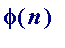

> # CAdsICTCM16.mws
Title of talk
Abstract and time comment
Cryptography, private and public-key. A limited aim
Converting text to number and number to text
Pohlig-Hellman private -key. Rivest-Shamir-Adelman public-key.
A PH private -key demonstration
An RSA public -key ( digital signature ) demonstration
The unsolved fast factorization problem. RSA129 illustration
 (the Euler phi-value of n ), if I have time...
The two primary references, and a book recommendation
Contact details
After August 31st 2007 please use the following Gmail address: jbcosgrave at gmail.com
This page was last updated 18 February 2005 15:08:21 -0000